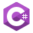
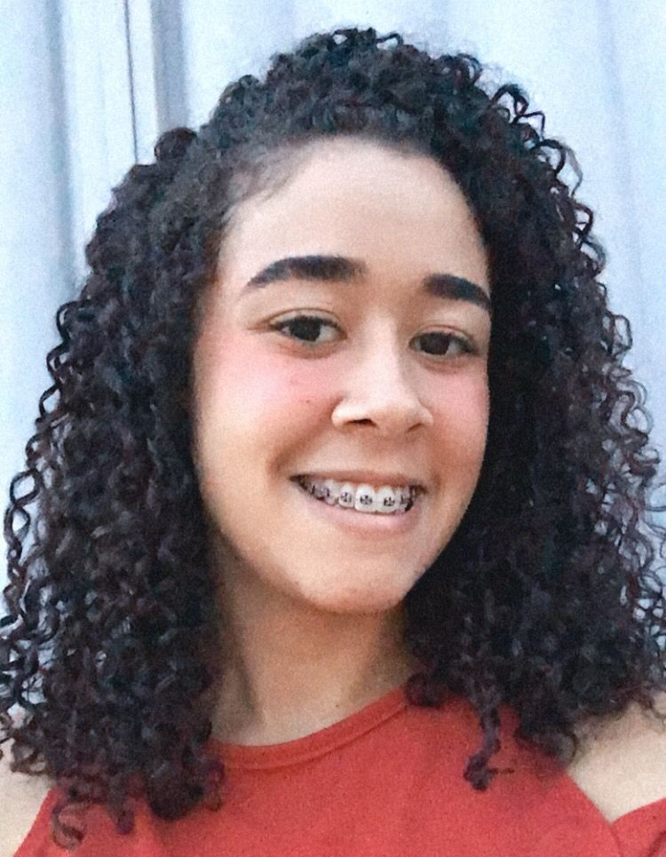

Olá, seja muito bem vindo(a)! Sou Kamilly Nobre futura desenvolvedora Full Stack.
Techs:


-


Quem sou?
Olá, sou Kamilly Nobre, uma entusiasta da tecnologia e aspirante a desenvolvedora Full Stack. Atualmente no 4º semestre do curso de Análise e Desenvolvimento de Sistemas, trago uma valiosa experiência como monitora no laboratório de informática de uma escola infantil, onde desenvolvi habilidades de organização, interação e familiaridade com tecnologia. Estou empenhada em aprimorar minhas habilidades em HTML, CSS, JavaScript e C#, buscando construir uma carreira sólida na área de desenvolvimento de software.